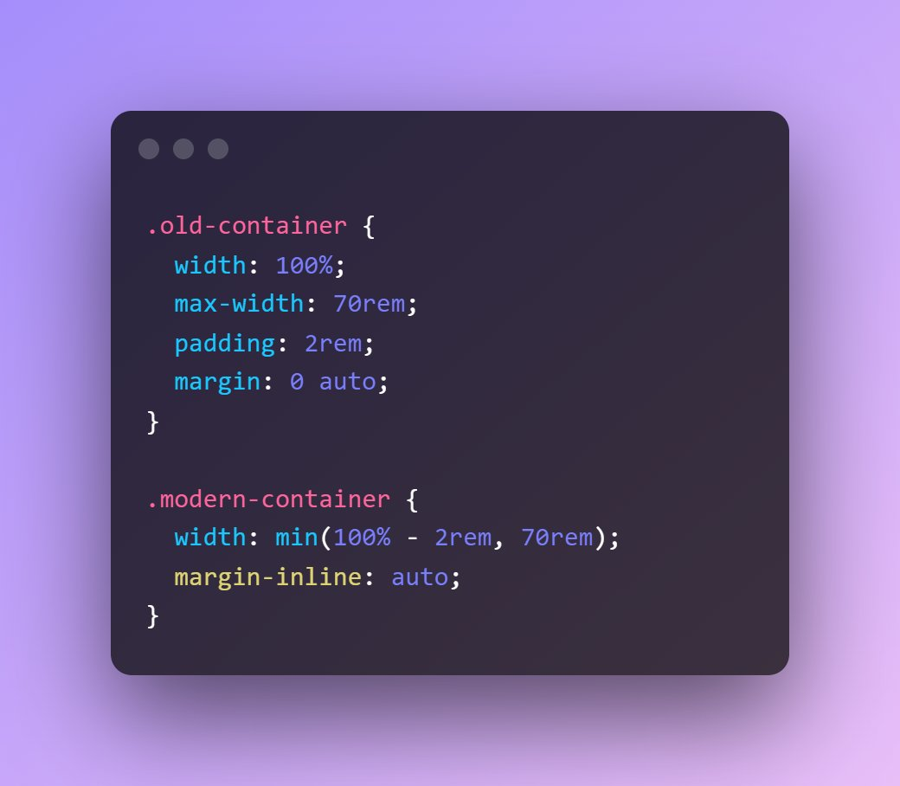

from @KevinJPowell 03/15/22 top
Kevin says: Modern CSS can make a lot of impossible things possible, but it also simplifies some things as well. One use case that I have on pretty much every project these days is setting up a container/wrapper width with min() and margin-inline.
